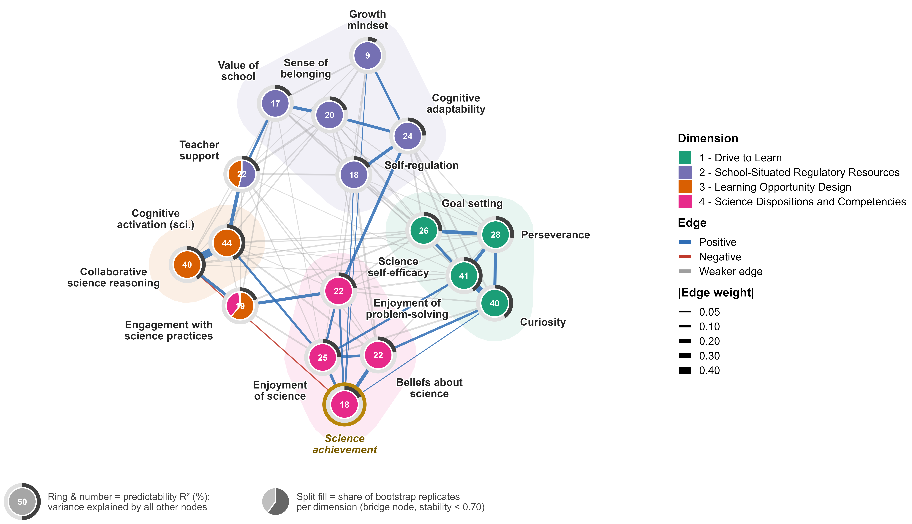
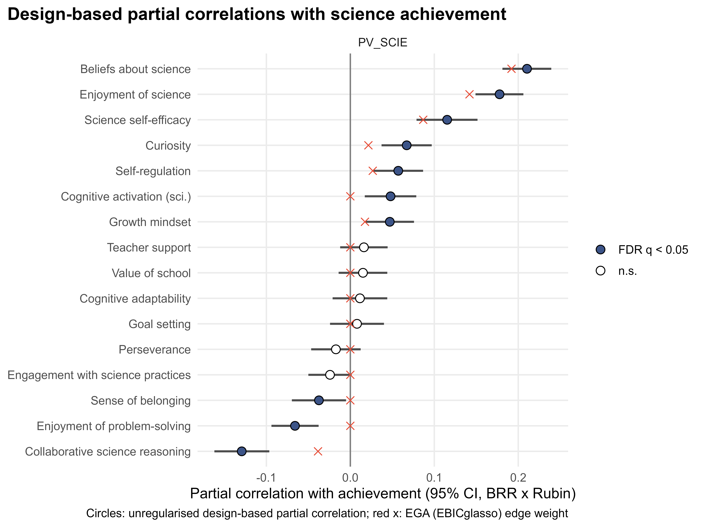

互動簡報
點選簡報後，可用 ← → 鍵翻頁；第 3 頁可點擊維度查看定義，圖表可點擊放大。
📱 使用手提電話瀏覽？
簡報以 16:9 版面設計，建議在電腦上觀看，或直接開啟簡報並把手機橫放。以下是文字版重點。
RQ1：學習能動性如何組織？
網絡分析找出四個穩定的維度，並由兩個橋接面向連結起來。
1 · 學習驅動力
Drive to Learn · 核心一致性 0.99好奇心 · 堅毅 · 解難樂趣 · 目標設定
2 · 學校情境調節資源
School-Situated Regulatory Resources · 0.97自我調節 · 認知適應力 · 成長心態 · 歸屬感 · 重視學校教師支援 · 橋接
3 · 學習機會設計
Learning Opportunity Design · 0.97 · 教師著力點認知激發 · 協作科學推理
4 · 科學傾向與能力
Science Dispositions and Competencies · 0.96科學本質信念 · 科學學習樂趣 · 科學自我效能感 · 科學表現科學實踐 · 橋接

RQ2：科學表現與哪些面向相連？
- 強而直接（+）科學本質信念 .21 · 科學學習樂趣 .18 · 科學自我效能感 .12
- 細小但穩定（+）好奇心 .07 · 自我調節 .06 · 認知激發 .05 · 成長心態 .05
- 沒有獨特關聯堅毅 · 目標設定 · 認知適應力 · 重視學校 · 教師支援 · 科學實踐
- 細小的條件性負關聯（−）協作科學推理 −.13 · 解難樂趣 −.07 · 歸屬感 −.04

閱讀提示
以上數值是偏相關：在控制其餘 15 個面向後的獨特關聯，並非因果效應。負關聯屬條件性結果，可能反映統計抑制，詳見協作悖論。
RQ3：對科學教學的啟示
1
建立學科專屬的信心與興趣
精熟經驗、真實探究、看得見的成功。
2
以學習機會設計為著力點
教師支援連繫調節資源與學習機會。
3
一般能動性是土壤，而非植物
把堅毅、目標設定連結到科學情境。
4
明確教授好奇心與自主學習
提問常規；計劃、監察、反思。
5
提升協作的質素，而非數量
有結構、有問責、具認知挑戰。